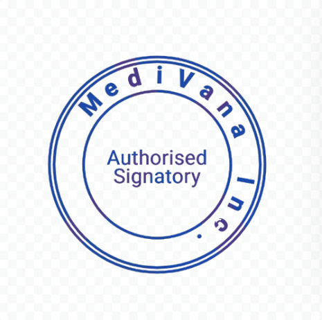

Step-by-Step Recommendations
Step 1: Medications Suggested by ML Model
Based on your symptoms, here are the recommended medications:
Step 2: Common Recommendations
Follow these general steps for faster recovery:
- Rest for the next 1-2 days.
- Drink plenty of fluids (water, herbal teas).
- Maintain a balanced diet rich in vitamins and minerals.
- Avoid strenuous activities.
Step 3: Follow-Up
When to consult a doctor:
- If symptoms persist for more than 3 days.
- If you experience severe chest pain or difficulty breathing.
- If fever exceeds 102°F (39°C).
Authorized by

MediVana